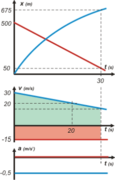

NO ME SALEN
PROBLEMAS RESUELTOS DE FÍSICA
(Movimientos variados)
|
|

|
Ad NMS 38*- 1.- El gráfico adjunto representa la velocidad en función del tiempo para dos autos que se
mueven por una carretera recta, uno hacia el otro. Si en t = 0 los autos están distanciados
500 m:
a.- hallar la distancia que los separará transcurridos 30 segundos,
|
 |
b.- graficar en un mismo par de ejes, posición en función del tiempo para ambos
vehículos (indicar valores característicos sobre los ejes).
|
|
*Este ejercicio formó parte del examen parcial del 08-05-2012
|
|
|
Como en cualquier ejercicio de cinemática, podríamos empezar por hacer un esquema. Pero como hay varias cosas que suponer sin demasiados datos, te lo voy a dejar como desafío. Además la información que nos brinda el gráfico del enunciado es suficientemente clara como para arreglarnos sin esquema durante la resolución.
Lo que igualmente tenemos que hacer es nombrar a los vehículos de manera diferente para que no se nos confundan. Vamos a llamar a un auto rojo y al otro auto azul... y vamos a pintar el gráfico con pintura para autos: |
|
|
Entonces, nos queda claro que el auto rojo se mueve con un movimiento uniforme, MRU, y el auto azul con un movimiento variado, MRUV.
Armemos las ecuaciones horarias de cada auto (tené los modelos a la vista). |
 |
| |
|
Para el auto rojo será:
x = 500 m – 15 m/s . t
Y las del auto azul:
x = 30 m/s . t + ½ a t²
v = 30 m/s + a . t
Vos me cuestionarás por qué le puse los 500 m al auto rojo y no al azul. Bueno, te cuento que muchos estudiantes pisaron el palito en ese punto el día del examen. Está claro que si elegimos posición inicial igual a cero para alguno de los dos autos, el otro tiene que estar en el mismo instante el la posición 500 m (o -500 m, da lo mismo).
El error está en parte inducido porque en el gráfico de velocidad el auto rojo está representado abajo y el azul arriba... y pareciera natural que ocurra lo mismo en el de posición... Pero la clave del asunto está en que el enunciado dice que avanzan hacia el encuentro. Si le pusiéramos los 500 m al auto azul ¡se estarían alejando!
Cuando veas el gráfico de posición en función del tiempo (para ambos autos en un mismo gráfico), te va a quedar más claro, así que espero que vuelvas a pensarlo.
Bueno, ahora pidámosles a esas ecuaciones que hablen de los instantes en los que tenemos interés (que -obviamente- son los que pregunta el enunciado y/o indica el gráfico). A la ecuación de velocidad del auto azul le vamos a pedir que hable del instante 20 s, y a las otras dos, que hablen del instante 30 s. |
|
|
| |
20 m/s = 30 m/s + a . 20 s |
[1] |
| xA(30s) = 30 m/s . 30 s + ½ a 900 s² |
[2] |
| xR(30s) = 500 m – 15 m/s . 30 s |
[3] |
|
|
Estas son las ecuaciones especializadas para los instantes que a vos te interesan. |
Como no podía ser de otro modo, nos quedó un sistema de 3 ecuaciones con 3 incógnitas (controlalo). Y muy sencillo. Resolvamos. De la ecuación [1] despejamos y calculamos la aceleración del auto azul:
a = (20 m/s – 30 m/s ) / 20 s
a = – 0,5 m/s²
Con ese valor vamos a la ecuación [2] y averiguamos xA(30s).
xA(30s) = 30 m/s . 30 s – 0,25 m/s² 900 s²
xA(30s) = 675 m
Y con la [3] calculamos xR(30s).
xR(30s) = 50 m
La distancia que separa a los autos a los 30 s será la resta entre sus posiciones en ese instante:
Δx(30s) = xA(30s) – xR(30s)
Δx(30s) = 675 m – 50 m
|
|
|
|
|
|
Ahora vamos a hacer el gráfico que nos pide el ítem b.- Pero yo como siempre voy a armar el tándem que seguramente nos va a ayudar un poco. Fijate que, como ya tenemos valores suficientes, podemos hacer los gráficos en escala y con otros chiches que seguramente resultarán aleccionadores.
El gráfico del medio es el mismo de antes... sólo que ahora coloreé unas áreas de las que te voy a hablar después. Vayamos al de arriba de todo que es el que nos pide el ejercicio. |
|
|
Fijate que la curva que representa al auto azul (una parábola) tiene concavidad negativa (parábola triste). Eso se corresponde con una aceleración negativa que es lo que ya sabíamos por dos motivos. Primero porque la velocidad del auto azul iba disminuyendo (cosa que se ve clarito en el gráfico del enunciado), segundo porque lo calculamos (nos había dado – 0,5 m/s², ¿te acordás?).
Además de tener concavidad negativa la curva arranca en forma creciente, hacia arriba, porque la velocidad inicial del auto azul era positiva (30 m/s, dato del enunciado proporcionado por el gráfico).
La recta que representa las posiciones del auto rojo es descendente, cosa que ya sabíamos porque su velocidad es constante y negativa (– 15 m/s).
Ahora fijate qué hubiera pasado si le ponías los 500 m iniciales al auto azul en lugar del rojo: es lo mismo que desplazar la curva azul hacia arriba y la roja hacia abajo. En lugar de acercarse y cruzarse se van a alejar inicialmente (aunque luego se vuelvan a acercar y a cruzarse) y no es eso lo que el enunciado indica. |
 |
|
|
|
Los sombreados que agregué a la gráfica de velocidad representan los desplazamientos de ambos vehículos durante los primeros 30 s. Calculá esas áreas y no te vas a llevar ninguna sorpresa. El área rosa vale 450 m y representa un retroceso (porque está debajo del eje t. Y como el auto rojo arrancaba de 500 m significa que a los 30 s estará en la posición 50 m (chocolate por la noticia). El área celeste debe valer 675 m. Se trata de un trapecio y vos lo podés calcular, estoy seguro, pero vas a necesitar conocer el valor de la velocidad a los 30 s. Eso se lo podés preguntar a la ecuación de velocidad y vas a ver que te da 15 m/s. (Vértice superior derecho del trapecio).
Bueno, creo que no podemos sacarle mucho más provecho a este ejercicio... pero tuvo importantes lecciones. |
|
|
| |
|
|
| Desafío: Hacé un esquema, pero que sólo figuren los datos (o incógnitas) del enunciado (incluido el gráfico que contiene). No hace falta que incluyas el conocimiento de que los autos se cruzan antes de los 30 s. Vas a ver que resulta fácil. |
|
 |
| Algunos derechos reservados. Se permite su reproducción citando la fuente. Última actualización may-12. Buenos Aires, Argentina. |
|
|
| |
| |
|